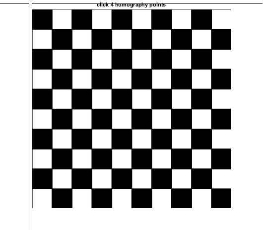
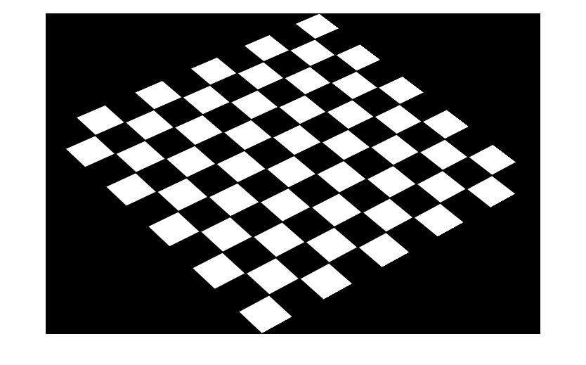
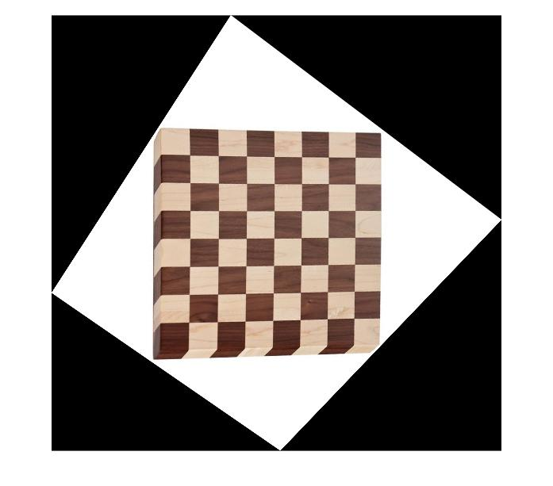
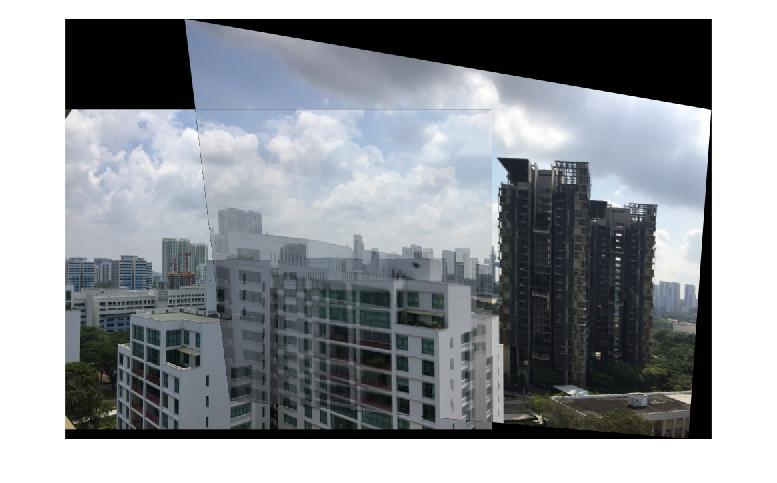
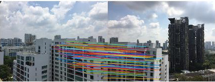
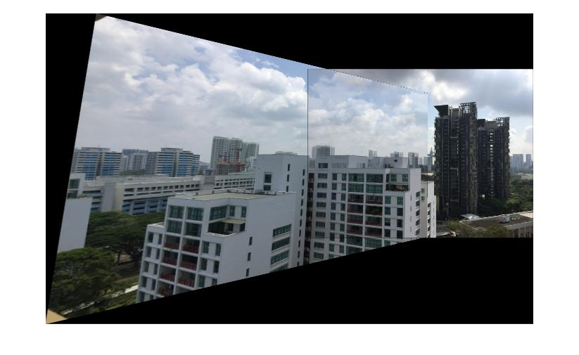

Assignment 1: Panoramic Image Stitching
Deadline: October 9, 2021 at 5pm
Read carefully: Academic integrity must be stricly followed. Copying-and-pasting from other's
code or froms any sources is not allowed. Software will be used
to detect any form of source code plagiarism. You must write a
report in a pdf format as instructed below (and indicate the parts and numbers
clearly). Your submitted code must be grouped/separated
into the same parts in the instructions. In your submission, you
must provide us with all necessary libraries. You are not
allowed to use any Matlab toolboxes. The maximum score for
completing part 1 until part 6 is 75. More scores are given
for submission on part 7. The deadline is a strict deadline (no
possible extension), so please prepare and plan early and carefully.
See the frequently asked question page if you have any doubt
on the instructions: FAQs
Part 1: 2D Convolution
-
Write a program for the image 2D
convolution. It should be able to process any grayscale input image, and
operate using the following kernels:
- Sobel kernel,
- Gaussian kernel,
- The 5 Haar-like masks (note, for this part, the user should be able to set the scale of the masks)
- Provide your conclusions on the outputs of each of the kernels, and
how the size of the kernel influences the outputs.
Part 2: SIFT Features and Descriptors
- Download the images from
here: link
- Extract SIFT keypoints from im01.jpg using any publicly
available SIFT code.
- In your report, show the keypoints on the images, like
shown below (similar but not necessarily the same):
Part 3: Homography
For this part, you must write your own code for computing
the homography matrix and transforming an image.
-
Download h1.jpg
and h2.jpg
- Provide a GUI where the user can click 4 points on an
image
- Let the user to choose 4 points on h1.jpg and 4 points
on h2.jpg

- Compute the homography matrix from h1.jpg to h2.jpg, and show
the homography matrix in your report.
- Use the homography matrix to tranform h1.jpg to h2.jpg, and show
the result in your report:

- Compute the homography matrix from h2.jpg to h1.jpg, and show
the homography matrix in your report.
- Use the second homography matrix to tranform h2.jpg to h1.jpg, and show
the result in your report:

Part 4: Manual Homography + Sticthing
- Load im01.jpg and im02.jpg
- Let the user to choose 4 points on im01.jpg and 4 points
on im02.jpg
- Compute the homograhy matrix
- Stitch the images together using the computed homography
matrix and show the result in your report:

- Explain in your report, why there is an effect of double
edges in the overlapping regions between im01.jpg and im02.jpg
Part 5: Homography + RANSAC
- Load im01.jpg and im02.jpg
- Based on SIFT, find matches between the two images
- In your report, show all the matches:
- Compute the best homography matrix using RANSAC
- In your reprt, show all the inlier matches (matches that
support your best homography matrix):

- Stitch the images together using the best homography
matrix and show the result in your report:

Part 6: Basic Panoramic Image
For this part and the next part, you can use any set of images
(even images taken by yourself)
that support your implementation. You must include the
images in your submission.
- Using SIFT and RANSAC for computing the homography
matrices, create a program to generate panoramic images given
ordered images
- In your report, using as many provided images as you can,
show the output of your panoramic image.
- The figure below is generated from 3 images and is
just an example. You must use as many images as you can.
Part 7: Advanced Panoramic Image
You will receive more scores if you include the following
implementation in your submission (the score depends on the
complexity of the problems and your solutions). To be graded, you must
provide some explanation about your implementation and results
in your report.
- Handling unordered images
- Showing the error accumulation problem and implementing the
bundle adjustment for solving the problem
- Warping, straigthening, gain compensation and multiband blending
- Other problems that are beyond the basic panoramic image in
Part 6.
Note, for the first three problems,
see
paper 1 (Automatic Panoramic Image Stitching using Invariant Features) and for the
paralax problem
see
paper 2 (Parallax-tolerant Image Stitching).
Submission:
Submit your codes and report via LumiNUS. Again, your
codes must be grouped/separated based on the parts above. The
report must be in a PDF format.